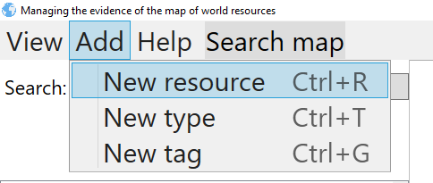
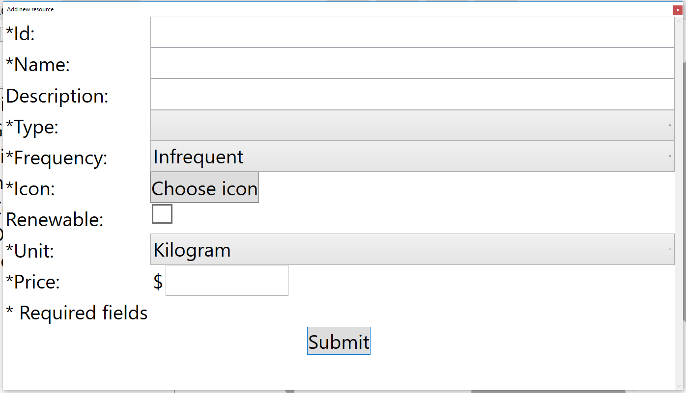
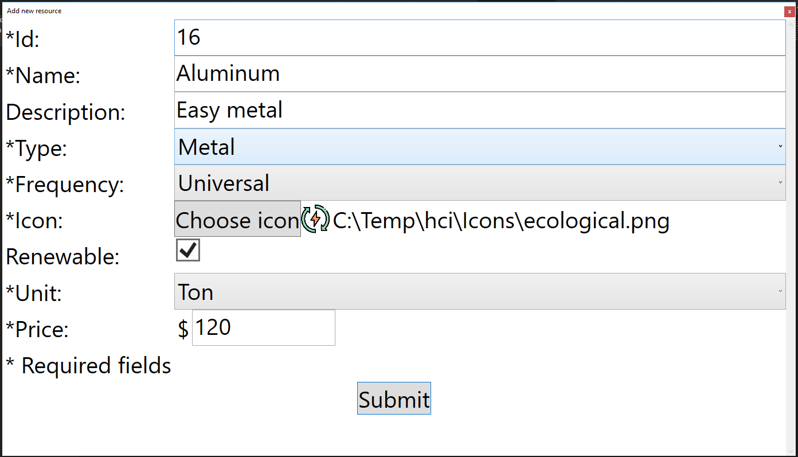
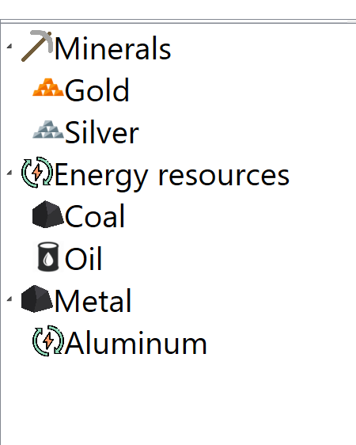

Adding new resource
You can add new resource. Process of adding should start with pressing btn add->New resource from menu bar, or by pressing shortcut key combination CTRL+R

That action will open window that looks like this:

You can type in id, name, description and also upload type icon. Oferred types are the ones that already exist. Frequency has three states.

By pressing submit button, if every field is filled and fulfils constraints, window will close and new resource under choosen type will be visible.

After this action, new type is capable of performing same actions as other types, like addingResourceOnMap